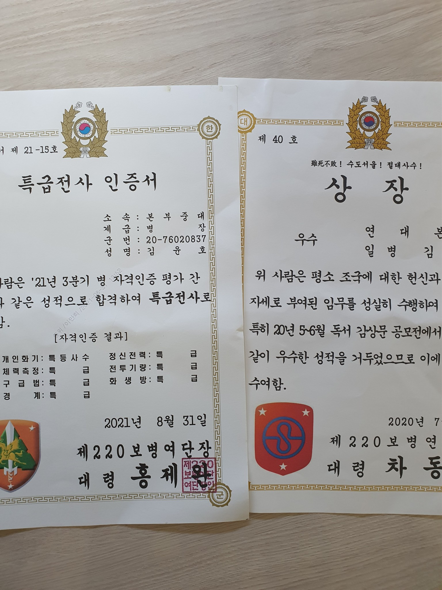
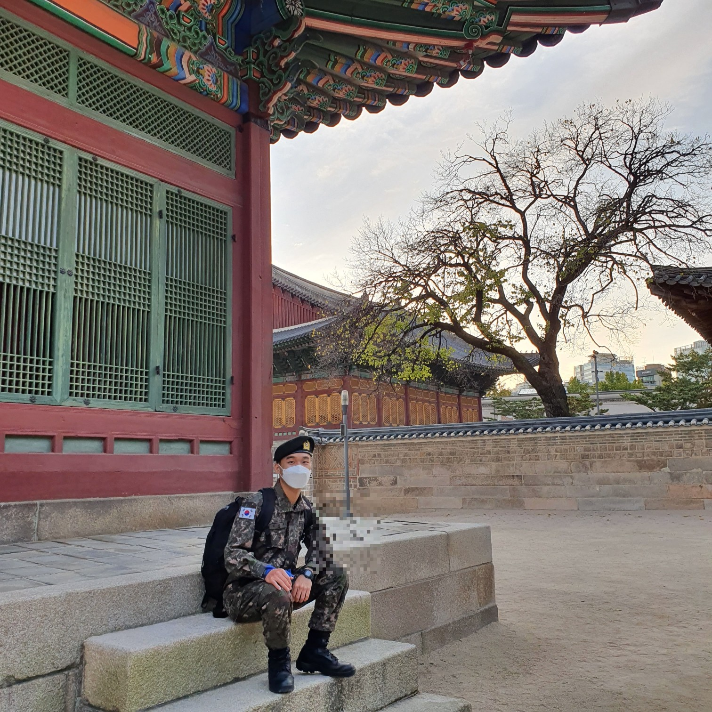
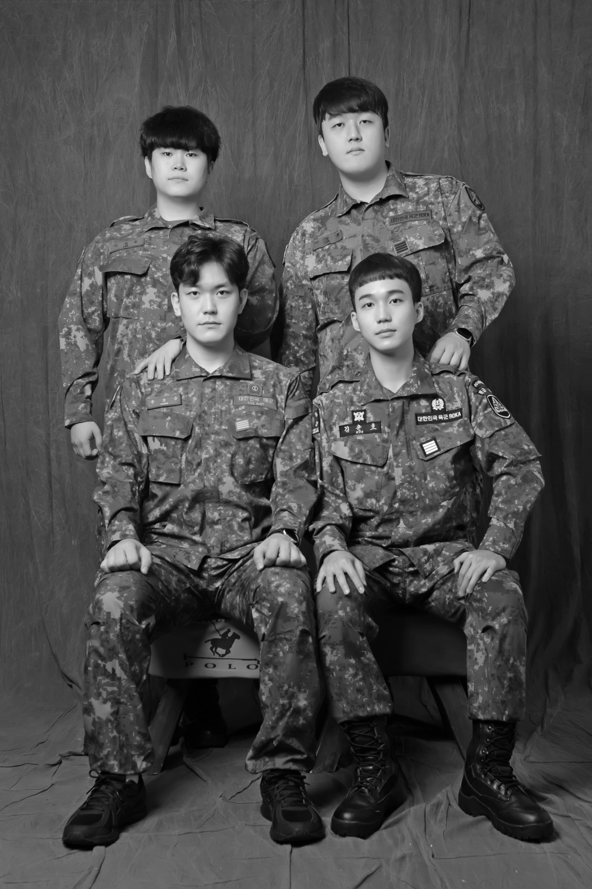
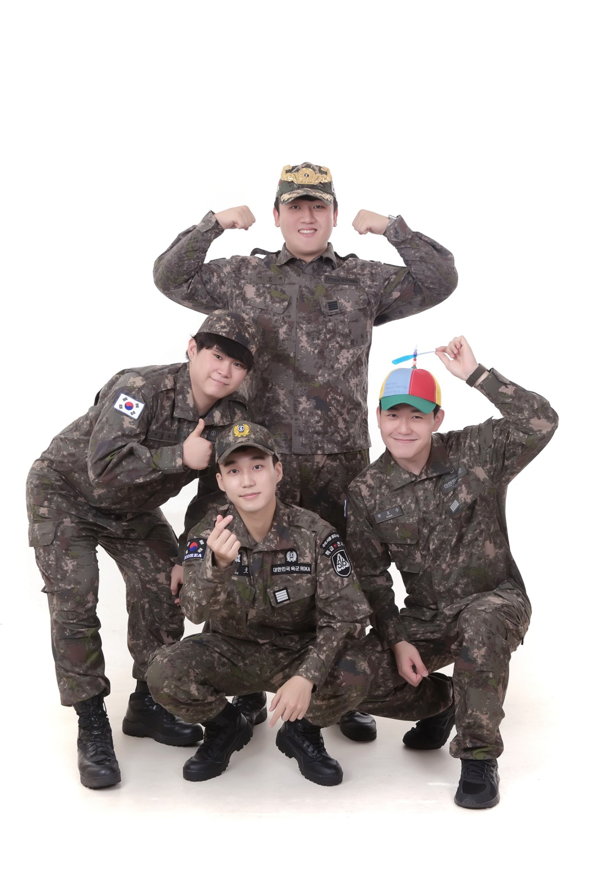
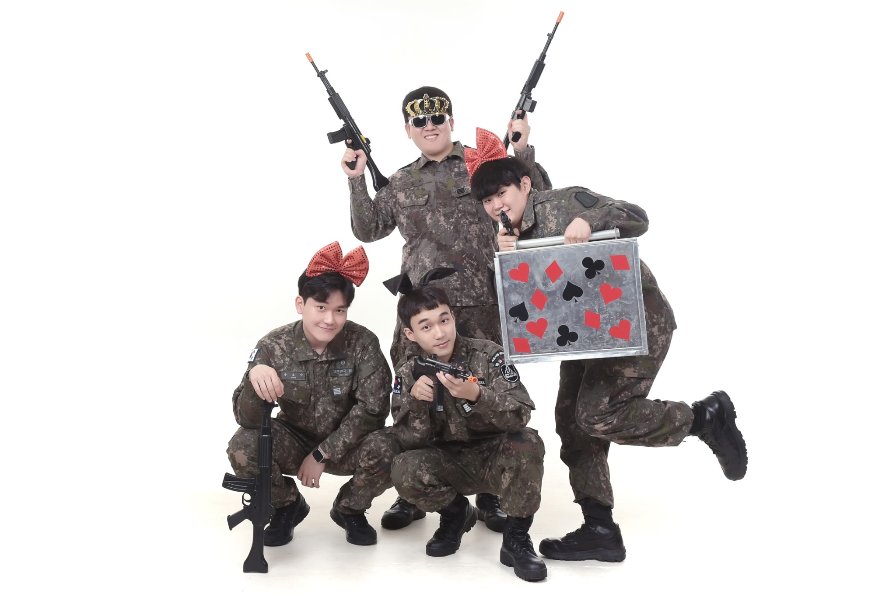

Creative practice · You Know Band
Music
Lead vocalist and electric guitarist in You Know Band (유노밴드). I write and perform original music; our first single, T같은 여자, F같은 남자, was released in May 2026.
View detail →Music, service, and creative work that shape how I think about youth, motivation, community, and human connection.
Lead vocalist and electric guitarist in You Know Band (유노밴드). I write and perform original music; our first single, T같은 여자, F같은 남자, was released in May 2026.
View detail →Cultural-arts outreach for justice-involved adolescents at the Seoul Juvenile Classification Review Center, contributing band ensemble and original-song performance, storytelling, and an interview segment on resilience and renewed goals.
View detail →As a member of Seocho District’s inaugural youth drug-prevention supporters group, I helped bring prevention closer to young people through six public-facing articles, digital content, and community outreach.
View detail →Alongside my primary assignment in personnel and supply administration, I served as a peer counselor. Listening to fellow soldiers, continuing to read and learn, and planning my future shaped how I think about motivation and care.
View detail →Lead vocalist and electric guitarist in You Know Band (유노밴드). I write and perform original music and use collaborative music-making as a space for creativity, communication, and connection.

T-like Woman, F-like Man
Our first single follows two people who speak about love in different ways and gradually learn to understand each other. I wrote the lyrics, co-composed the song, and played guitar.
The title borrows the MBTI’s Thinking (T) and Feeling (F) preferences, which Korean listeners often use as shorthand for someone who answers with logic and someone who answers with emotion. The song treats that gap not as a mismatch but as two languages of care, and it is about the small moments when each person starts to hear what the other really means.
Also on Apple Music, YouTube Music, Melon, and more platforms.

Participated in cultural-arts outreach for justice-involved adolescents at the Seoul Juvenile Classification Review Center, contributing band ensemble performance, original-song performance, storytelling, and an interview segment centered on resilience and renewed goals.

The June program brought a band performance together with electronic violin, visual art, and other performances for adolescents at the center. The reporting describes an evening organized around participation, empathy, and the possibility of a new beginning.
Coverage: The AsiaN · LawIssue · Kyeongin Ilbo
The second visit continued the program’s theme of renewed goals. Alongside the band’s music, the November program included a video interview about dreams and stories of change, according to The AsiaN’s November report.

Drug prevention can sound distant when it arrives only as a warning. As a member of Seocho District’s inaugural Mabul Hero Supporters, I helped bring the message closer—through youth-facing articles, digital content, and community outreach.

Launched by Seocho District as South Korea’s first local-government youth drug-prevention supporters group, Mabul Hero invited young adults to help shape how prevention reaches their peers.
My role was not to make the message louder, but to make it easier to enter: translating public-health concerns into language and formats that young people might actually pause to read.
Prevention works best before risk feels distant, abstract, or like someone else’s problem.
Across six articles, I contributed to a wider prevention conversation about addiction risk, the misuse of prescription medicines—including diet and ADHD medications—and the ways illegal drug distribution can move through online spaces.
The editorial challenge was simple but important: keep the information responsible without making it unreadable. Each piece became an exercise in public communication—clear enough to share, grounded enough to trust, and close enough to everyday life to matter.
The wider initiative carried the same message into the community, including a youth drug-prevention campaign held around World Drug Day at the Seocho Music & Art Festival. Working alongside local public-health, education, police, and pharmacy partners showed me that prevention is strongest when information and community presence reinforce one another.
Program coverage: Yonhap News · Seoul Ilbo · OBS News

Peer counseling · September 2020–September 2021
Mandatory service brought me into contact with people beyond my usual circles. It also became a place to support others, build daily discipline, and give my future a clearer direction.
In the Army, I met people I was unlikely to have encountered in my usual life. We came from different backgrounds and carried different concerns, ambitions, and ways of seeing the world. Living and working together gave me opportunities to understand people beyond the circles I already knew.
My primary assignment was in personnel and supply administration (편성보급병). Alongside those duties, I also served as a peer counselor, offering emotional support and guidance to fellow soldiers.
I listened to their worries, wrote letters, and offered encouragement when someone needed a little strength to get through the day. When appropriate, I helped peers connect with further support. These experiences taught me the value of making time for someone: listening carefully, taking their concerns seriously, and expressing care in a way they could return to later.

I remained committed to basic military training as well as my everyday duties. I earned top marks in every assessed category and received the Special Warrior qualification (특급전사). The certificate records the highest ratings across marksmanship, physical fitness, first aid, guard duties, mental readiness, combat skills, and chemical, biological, and radiological defense.
I also continued to read and reflect, receiving an award in a book-review competition. Even while away from university, I wanted to keep learning and developing myself. Training and reading became two ways to practice the same commitment: making steady progress through the responsibilities and opportunities in front of me.

Although I had entered the Army through conscription, I began to think seriously about what I wanted to build afterward. I drew up a ten-year plan and started shaping my dream of studying in the United States. Giving that dream a place in a longer plan helped me see military service as part of a continuing life.
I also paid attention to the people around me. Soldiers who had a goal seemed more actively motivated in their duties and relationships, even though they had not chosen to be conscripted. Those without a clear goal sometimes seemed less engaged in both. These were informal observations within my own surroundings, and I cannot generalize them or conclude that goals alone explained those differences. Still, they left me with a question that stayed with me: how might a sense of direction help someone engage with circumstances they did not choose?
During military service, I began to give my future a direction.
The people I met remained part of my life after military service ended. The three photographs below were taken after discharge, when we came together again in uniform. They hold a different part of the story: the friendships, shared memories, and humor that continued beyond our time in the Army.
What I carried forward was a clearer plan for my own life and a deeper appreciation for supporting others as they worked through theirs. Listening, encouragement, and a sense of direction became experiences I would continue to draw on in my work with young people.


